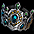

韓国優遇仕様
Ultimateアイテムドロップ

金のインゴット 重ね置き100本
 |
おそらく最も要望が多いであろうインゴットの重ね置き仕様。 過去何度も要望を出してきましたが、頑なに韓国運営から却下され続けています。 |
不思議な紺碧の壺 重ね置き10個 （修正済）
 |
※2017年10月25日アップデートにて、日本でもやっと修正されました。 |
紛失した冒険団Box 取引可能
日本ではアイテム獲得目的の寄生キャラクターを抑止するため2016年12月20日アップデートで取引不可に変更されましたが、レイドに参加するキャラクターが非常に少ない韓国では取引可能のままになっています。
ただし、深淵の黒曜石も出現します。

ユニークアイテム分解時の獲得アイテム2倍

要求Lv211のガイスターストックは日本では、以下の通りタティリス遺跡のかけら30個となりますが…
| ユニークアイテム 分解 | ||||||
|---|---|---|---|---|---|---|
| 要求Lv | タティリス遺跡のかけら （100％） |
神秘の石のかけら （レア） |
結晶石 （レア） |
|||
| 1〜100 | 10個 | 10個 | - | |||
| 101〜200 | 20個 | 20個 | 1個 | |||
| 201〜300 | 30個 | 30個 | 1個 | |||
| 301〜400 | 40個 | 40個 | 1〜2個 | |||
| 401〜500 | 50個 | 50個 | 2個 | |||
| 501〜600 | 60個 | 60個 | 2〜3個 | |||
| 601〜700 | 70個 | 70個 | 3個 | |||
| 701〜800 | 80個 | 80個 | 3〜4個 | |||
| 801〜900 | 90個 | 90個 | 4個 | |||
| 901〜 | 100個 | 100個 | 4〜5個 | |||
| タティリス遺跡のかけら 60個 結晶石 2個 と、日本の2倍獲得 |
|
| グラッジサイズ（要求Lv174）の場合も タティリス遺跡のかけら 40個 神秘の石のかけら 40個 と、日本の2倍獲得 |
協会支援Lv制限なし
 |
日本ではLv100を超えるとスフィア系課金アイテムがないと協会支援をもらえませんが、 |
 |
韓国では 「こんにちは。もしかしてモンスターを狩るのにお困りですか？私たち協会専属魔法師は狩りにお困りの冒険家をサポートするために、様々なバフをかけています。」 となっており、 |
 |
スフィア系課金アイテムの有無に関わらず、いつでも協会支援をもらうことができます。 |
協会雑貨商人Lv制限なし
Lv100を超えても冒険家協会の雑貨商人にて、アイテムを購入することができます。
冒険家協会の羅針盤‘スマグ’はメインクエストでの移動にも便利です。

協会テレポーター街移動Lv制限なし
 |
冒険家協会の協会テレポーターでは、Lv100以下のキャラクターは無料で街へ移動させてくれますが、 |
 |
日本ではLv100を超えると利用できません。 |
 |
韓国では 「我が冒険家協会では政策上、ある程度自立した冒険家の方々に協会の補助資金として少額の利用料を頂いています。どの街に移動しますか？ 利用料:4万5000G」 となっており、Lv100を超えても有料で利用することができます。 砂漠村リンケンや大きな町 バリアートなどテレポーターでの移動ができない街への移動に便利です。 |
協会テレポーター支部移動 利用料半額
 |
日本ではLv100を超えると冒険家協会各支部への 移動に4万Gかかりますが、 |
 |
韓国では半額の2万Gで利用できます。 |
「2つ目のテスト」再振りLv150まで可能
 |
2つ目のテストの再振りができるのは日本ではLv100までですが、 「追加報酬：スキル＆ステータス初期化 制限レベル150を超えると、追加報酬を受け取ることができません。」 と、なっており |
 |
韓国ではLv150まで可能です。 |
サナの材料ボックスから出現するアイテム数
一部のアイテムは20個セットで出現し、共鳴石も出現します。
| サナの材料ボックスから出現するアイテム | 日本 | 韓国 | |
|---|---|---|---|
| タティリス遺跡のかけら | 1個 | 20個 | |
|  | 修復済みタティリス遺跡の出土品 | 1個 | 1個 |
| 神秘の石のかけら | 1個 | 20個 | |
| 神秘の石 | 1個 | 1個 | |
| 黒き炎の欠片 | 1個 | 20個 | |
| 結晶石 | 1個 | 1個 | |
| 炎の石 | 1個 | 1個 | |
| 共鳴石 | なし | 1個 | |
特殊パッシブ数値 （修正済）
※2017年9月6日アップデートで日本仕様も「+5％」に修正されました。
 |
サマーコクーン限定 コモルコクーン |
 |
特殊パッシブ 「- 能力値低下状態 抵抗+5％」 となっており、 日本仕様の 「 - 能力値低下状態 抵抗+2％」 より高く設定されています。 |